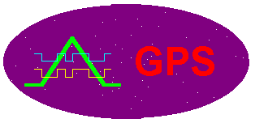

Table of Contents
-
U. S. Department of Defense Satellite
Navigation
System
-
GPS Positioning Services Specified In The
Federal
Radionavigation Plan
-
GPS Satellite Signals
-
GPS Data
-
Position and Time from GPS
-
GPS Error Sources
-
Geometric Dilution of Precision (GDOP)
-
Differential GPS (DGPS) Techniques
-
Documents relating to GPS
-
Links to other related information
-
 Sam
Wormley's GPS Page
Sam
Wormley's GPS Page
-
The
Institute of Navigation
-
United
States
Coast Guard Navigation Center
-
NOAA
National Geodetic Survey Division Home Page
-
University
NAVSTAR Consortium (UNAVCO)
-
Geodetic
Datum Overview, Department of Geography, UC at Boulder
-
Coordinate
Systems Overview, Department of Geography, UC at Boulder
-
Map
Projections Overview, Department of Geography, UC at Boulder
-
The
Geographer's Craft Project, Department of Geography, UC at Boulder
-
Home
Page, Department of Geography, University of Colorado at Boulder
-
Reference List
Last Revised 2011.5.31. KEF.